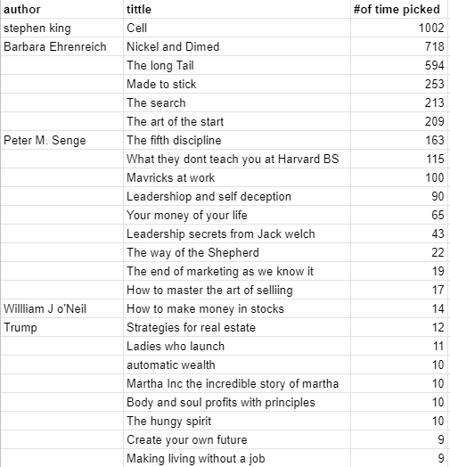
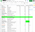
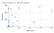
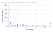
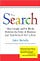

Working with past social data about books

Already showed you the work I was doing with this map which was about studying demographic history about a geographical area but this study is not about this area simply but about the whole world and about a peculiar belief that grew formidably well being now adopted by millions of person around the world. As someone interested in software and product adoption, this worth studying in my point of view and it happens that it is very likely that I have this belief also what can a second argument for doing it. Past events can teach us who we are and help us see clearly what to do for being in a better situation today and tomorrow. Past social events on the internet are like that. In this article, We will be diving into social media about books. I have already written about this social media which is Shelfari.
In this platform, we gonna make a simple study about business book lovers. Those people like me who love reading business books. We will try to get some simple facts about their commonality, the things they share because what they have in common is probability what drives them or what defines where they wanna go. In order to help them better, I thought that it is better for us to know what drives them and where they wanna go to help them. I don't know about you but I want to help them. I want to help all business book lovers because I committed to helping all book lovers simply. This is why I decided to share this study with you because I thought it could be helpful to a book lover.
here is the first base number about this business book lover community we are going to study.
138 Members / 146 Books / 28 Discussion Posts
At first glance, we could just say that they probably value silence (28/138) because the number of discussion posts is low compared to the number of members.
This business book lover’s group has 146 books on its bookshelf.
here are 25 of the 146 books of this shelf of business book lovers ordered by the number of readers who picked them for being part of the shelf of this business book group

What could be interesting is to see how these books were rated in amazon or other book platforms like nook of Barnes and noble
If making a product successful is making it worth sharable it could be less painful to make it succeed by offering it to those who are more likely to share. Those could simply be who are more sharing things on the internet, who
Bellow the table of books is complete with more information about the book as you can see I added the publication dates and number of reviews on amazon

What we can do is to look for the relation between the number of business book readers who added the book and the number of reviews this book got on amazon

Another thing we can do is to look at the relation between the age of each book and the number of times it is selected by readers of this business book group. The chart below is about this relation.

The datapoint in red is an interesting data point because here the age is more than 5 years and the book has a very high value of the number of readers who picked it. It could be said that this book is an important book of the business book segment that is remembered by readers because you can see that all the books that are more than 5 years old have almost all have been picked one time. This book is The Search by John Battelle.

This data only can tell that this group of business book lovers is very interested in the tech business but this is an assertion to be proved with hard data of the interest of the reader.
You can make other insightful simple basic analyses with these 30+ data points. You clearly see that with just two charts we ended highlighting an interesting book and have on hand a formula for detecting such kind of book that is old but still remembered and notified. This formula is as simple as defining an age limit (5 years in this case) and a number of selection thresholds.
If I was not aware of basic analysis I would go and gather a big amount of data and using different kind of machine learning and artificial intelligence framework without even knowing this simple relationships behavior highlighted by the charts. This is what has been said in Big data is a misleading name. Once this basic relationship highlighted the next set will be to develop a feature engineering algorithm that would the calculation need to outputs the feature that will help the AI system discover this pattern. In the second case, it is as simple as computing the age of each book.
So given to this analysis The search by john battelle is an interesting book. I think that this book below will be also another interesting book about search engines.
it will be published by Book Dojo and you will get all the data that will be used by the book with exercises to play with them. The data that we used in this article are part of the data of this coming data-driven book. If you want to part of those who will read it and play with the data. You can use this form.